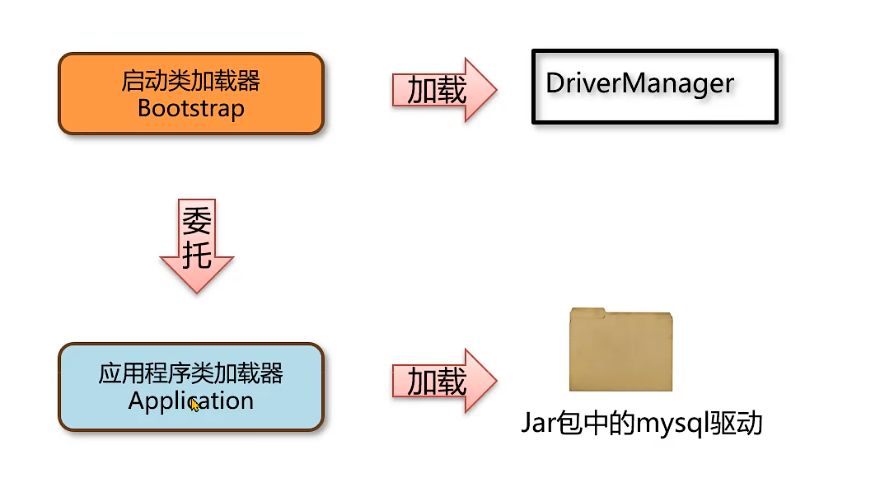

5-双亲委派机制
多个类加载器，解决一个类到底由谁加载
保证类加载的安全性，保证核心类必须虚拟机自己提供
避免重复加载
每个加载器都有父加载器（不是继承，而是成员变量）
向上委派，如果加载过直接返回，如果没有继续委派
向下尝试加载，如果在自己的路径就加载，如果不在就给下面的加载
因此 String 类不能被覆盖
主动加载一个类
使用
Class.forName使用当前类的类加载器去加载指定的类获取类加载器，通过类加载器的 loadClass 指定某个类加载器加载
打破双亲委派机制
三种方式打破
自定义类加载器，重写
loadClass方法线程上下文类加载器，利用上下文类加载器加载类，比如 JDBC 和 JNDI
Osgi框架的类加载器，这个允许同级之间委托进行类的加载
为什么要打破
Tomcat 程序可以运行多个Web应用，如果两个应用出现相同限定名的类，比如
Servlet 类，Tomcat
要保证两个类都能被加载并且是不同的类。
自定义类加载器
ClassLoader 包含4个核心方法：
loadClass类加载的入口，提供了双亲委派机制，内部会调用findClassfindClass由子类实现，获取二进制数据并调用defineClass，比如URLClassLoader会根据文件路径获取类的二进制数据defineClass做校验（不给加载java.开头的），调用虚拟机底层的方法将字节码信息加载到内存（方法区和堆），加载阶段完成resolveClass连接阶段
多线程下会加锁，防止同时加载
如果要自定义类加载器来打破双亲委派：
继承
ClassLoader只需要重写
loadClass然后注意一点就是因为加载任何类都要加载它的父类（
Object），因此前面加上如果要加载java.开头的给父类加载器（ClassLoader）来加载然后改了双亲委派那些逻辑，自己加载其他的就行了
自定义类加载器不手动赋值，那么父加载器自动就是
getSystemClassLoader（） 即
AppClassLoader，重写可以自己改
只有相同类加载器+相同类限定名才算同一个类
如果不想破坏双亲委派机制，只重写 findClass 即可
线程上下文类加载器
其实没有打破。
简要描述：JDBC首先要加载一个 DriverManager 的类，这个类有静态代码块。
因此再调用 DriverManager 的静态方法之前，需要先加载类，因此会执行类的初始化（执行静态代码块），因为核心类，使用的是启动类加载器。
它的静态代码块逻辑：通过 SPI 拿到驱动 jar 包， 然后使用线程上下文存的类加载器来加载驱动包。
这个过程有点像：启动类加载器然后委托了应用类加载器来加载，倒反天罡！
但是其实也不算，因为哪怕委托给了应用类加载器，本质上还是走了一轮双亲委派。
JDBC例子
DriverManager 来管理项目中引入的不同数据库的驱动，比如 mysql 驱动。
DriverManager 位于
rt.jar核心包，由启动类加载器加载依赖中的 mysql 驱动对应的类，由应用程序类加载器加载

driverManager 怎么知道 jar 包要加载的驱动在哪里？
SPI机制（Service Provider Interface）
在mysql的jar包固定路径
META-INF/services文件夹，用接口的全限定名来命名文件，对应的文件写接口的实现（类的全限定名）。使用 ServiceLoader 加载实现类
SPI中如何获取应用程序类加载器？
使用线程上下文保存的类加载器进行的类加载，一般是应用程序类加载器
OSGi模块化
热部署：服务不停止更新字节码文件到内存